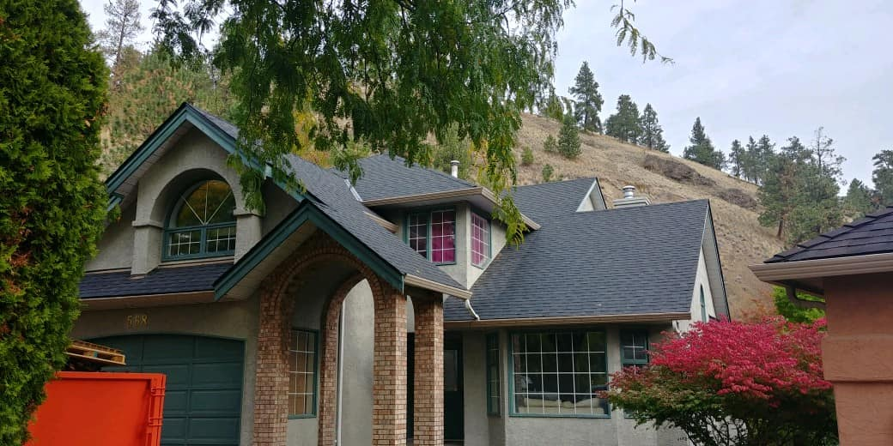

Most Popular · 50-Yr WarrantyAsphalt Shingle Re-Roofs
Boost your home’s curb appeal, energy efficiency, and resale value with architectural CertainTeed Landmark® shingles engineered against algae, high winds, and harsh winter weather.
- ShingleMaster™ certified installation
- Wide palette of architectural colours & profiles
- Full post-installation photo package included